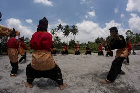

Tabuik
Upacara perayaan keagamaan dan budaya di Pariaman, Sumatera Barat, untuk memperingati gugurnya cucu Nabi Muhammad SAW, Husein bin Ali, saat pertempuran Karbala.

Tari Piring
Tarian tradisional dari Minangkabau, Sumatera Barat, yang menggunakan piring sebagai properti utama. Ciri khasnya adalah gerakan tangan yang lincah mengayunkan piring tanpa jatuh, mengikuti irama musik pengiring khas Minangkabau.

Randai
Seni pertunjukan tradisional Minangkabau yang menggabungkan unsur drama, tarian (terutama yang distilirisasi dari silat), musik, dan nyanyian. Pertunjukan ini biasanya dilakukan oleh sekelompok orang yang membentuk lingkaran, menyampaikan cerita dari kaba (cerita rakyat), dan sarat dengan pesan moral serta nilai-nilai adat.